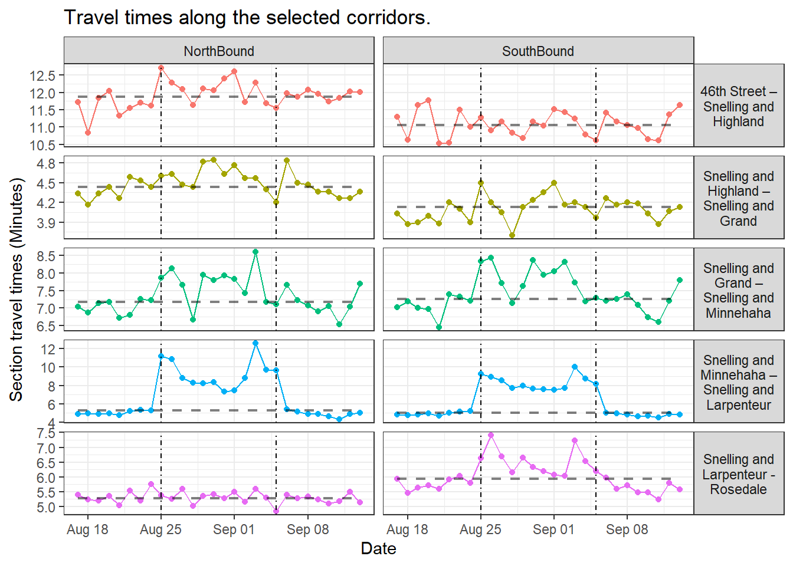

Next-Day Reporting for Headway-Based Service Proof-of-Concept Field Test
18 August, 2023
Introduction
Metro Transit Bus Operations will be running a proof-of-concept field test of headway-based service for the A Line during the 2023 State Fair. During the pilot, A Line buses will prioritize consistent headways over schedule adherence with a goal of reducing the gaps and bunching caused by variable travel times near State Fair grounds.
While the full pilot evaluation will occur after the State Fair, senior operations leadership need daily updates to monitor the pilot while it is running. This page created by Strategic Initiatives will provide a daily update on the following metrics that are relevant to evaluate the performance of transit service.
Metrics
- Number of trips delivered: Number of A Line buses that depart from Snelling and Como station in both directions.
- Number of gaps: Number of times the gap between successive buses at a station exceeds a defined threshold (default 30 minutes, and excluding the scheduled headways larger than the defined threshold).
- Headway performance: Percentage of bus departures where the actual headway is between 60% – 140% of the scheduled headway (excluding start terminals).
- Terminal headway performance: Percentage of bus departures where the actual headway is between 60 – 140% of the scheduled headway (only including start terminals).
- Number of vehicles inserted: Daily count of trips performed by vehicles added to the A Line to reduce gaps.
- Section travel times: Travel times along the following corridors:
- 46th Street – Snelling and Highland
- Snelling and Highland – Snelling and Grand
- Snelling and Grand – Snelling and Minnehaha
- Snelling and Minnehaha – Snelling and Larpenteur
- Snelling and Larpenteur - Rosedale
Results
To illustrate the metrics mentioned above, right now line plots by day were created for the 2022 Minnesota State Fair (Aug 25, 2022 – Sep 5, 2022). These Plots will be replaced by data from 2023 Minnesota State Fair after the field test begins and data is available. And this page will be updated every day during the State Fair to display the most recent results.
Section travel times

Stations along A line (Northbound) for reference:
- 46th St Station Gate A
- 46th St & Minnehaha Station
- 46th St & 46th Ave Station
- Ford & Woodlawn Station
- Ford & Finn Station
- Ford & Kenneth Station
- Ford & Fairview Station
- Snelling & Highland Station
- Snelling & Randolph Station
- Snelling & St Clair Station
- Snelling & Grand Station
- Snelling & Dayton Station
- Snelling & University Station
- Snelling & Minnehaha Station
- Snelling & Hewitt Station
- Snelling & Como Station
- Snelling & Nebraska Station
- Snelling & Larpenteur Station
- Snelling & Co Rd B Station
- Rosedale Transit Center Gate A